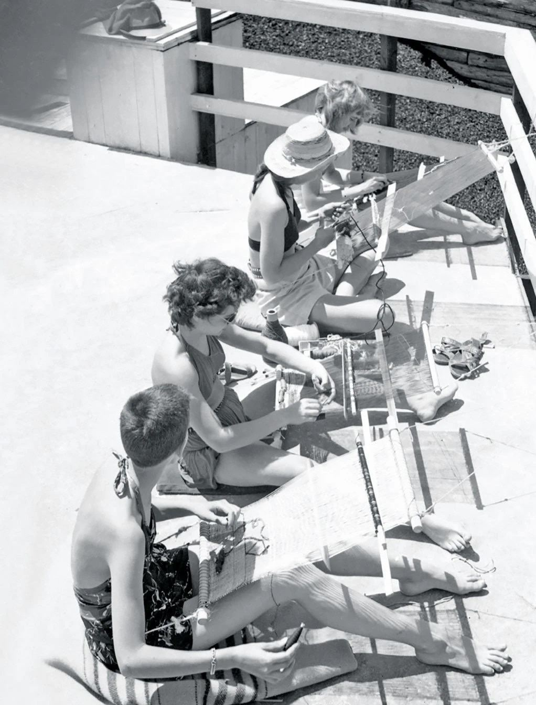

Intertwining tectonics – the intercultural work of Anni Albers
The Journal of Terraced Landscapes volume 1, issue 2, pp. 82–111 (2020) · Cite this article
- 139 views
- 181 downloads
- DOI10.5281/zenodo.8059511

Abstract
This article reflects on the intertwining of art, architecture and landscape in the work of the artist and educator Anni Albers. It focuses on the tectonic quality of weaving as a central theme in Albers’s oeuvre, which she developed following her studies at the Bauhaus and throughout her repeated visits to archaeological sites in Mexico.
The text looks at Albers’s interpretation of the geometries of architecture and landscape, as well as of local weaving traditions, through the examination of her formal and material experiments. It follows the development of the spatial aspect of her weavings and their conversion into constructive elements alongside her collaborations with architects and the textile industry. The article also takes into consideration Anni Albers’s theoretical contributions to transferring design knowledge, such as On Weaving, a compendium of weaving techniques that includes textiles from Albers’s collection of Pre-Columbian art along with pieces of her own work, as well as that of contemporary artists.
Moreover, the article investigates how the study of ancient Mesoamerican architecture and art contributes to the universality and radical contemporaneity Albers sought in weaving. It shows the relevance and topicality of Albers’s work, revealing her trailblazing ideas, beyond preserving or passing on artisanal traditions, drawing on craft as a means for carving out and transmitting the essential quality of weaving as a space-creating, future-oriented activity.
Keywords
- Anni Albers
- weaving
- tectonics
- architecture and landscape
- Mesoamerican culture
- design knowledge transfer
The motivation for this article arose from a visit to the exhibition Josef Albers in Mexico at the Peggy Guggenheim Collection, Venice in 2018, which showed the influence of Mexican architecture, both pre-Hispanic and Hispanic, on the work of artist Josef Albers (1888-1976). What the exhibition elicited to a great extent was the role of Josef Albers’s female partner, textile artist Anni Albers (1899-1994), in the couple’s lifelong exploration of Meso- and South American culture. Although numerous exhibitions and publications, such as Anni Albers at the Tate Modern in London or Anni and Josef Albers Latin American Journeys, have tried to fill this gap in recent years, I consider it important to point out Anni Albers’s continuing relevance as an intermediary between cultures – European and American – and as an investigator ‘in practice’. For though almost a hundred years have passed since German-born Annelise Fleischmann started her studies at the Bauhaus School in Weimar in 1922, her ideas remain highly topical today and influence countless designers, artists, and scholars all over the world. This article focuses on her importance as an intermediary between cultures, times, and production processes, highlighting her multifaceted activity as an artist and designer, teacher, collector, scholar, and writer.
In particular, the present article attempts to elucidate two aspects related to Anni Albers’s travel experience and her contact with Mesoamerican and Andean weaving culture: Firstly, how her own ideas of the essence of weaving, related to material and structure, came to be corroborated and developed through her acquaintance with not only textiles and tools, but also architecture and landscape; secondly, how Anni Albers incessantly endeavoured to transmit her inter-cultural ideas to students and professionals worldwide and how her unprejudiced and unconventional thoughts offer a source of inspiration for professionals today, serving as an impulse for – interdisciplinary – efforts to fully develop the potential of textiles. Consequently, the first part of the article explores the constructive and spatial aspects of Anni Albers’s work and the tectonics of her weaving, informed by Mesoamerican and Andean culture, architecture, and landscape. The second part focuses on Anni Albers’s interdisciplinary approach, her experimental form of knowledge transfer, and its impact on contemporary textile applications.
2. Background
Anni Albers’s weaving activity oscillated between art and design, manual and machine production. In the course of her studies at the German Bauhaus, where she was allocated to the weaving workshop, she received classes by artists Johannes Itten, Wassily Kandinsky, and Paul Klee. During the first Bauhaus phase in Weimar under director Walter Gropius she produced hand-woven artistic works, wall-hangings, and rugs; her final study project at the Dessau Bauhaus, dating from 1930, then led by Hannes Meyer, however, was an innovative, light-reflecting yet sound-absorbing wall fabric for an auditorium, intended for industrial production.
And a light-reflecting material was something completely new at that time, as was a soundabsorbing material that had a light surface. So this was quite an intriguing kind of textile engineering (Albers, 1968).
Already during her study years, in line with a general societal interest in non-European cultures, Anni Albers had come into contact with American textiles, through visits to the extensive textile collection at the Museum of Ethnology in her hometown Berlin, the study of respective literature, such as Kunstgeschichte des alten Peru (The art of old Peru) by Walter Lehmann and Heinrich Ubbelohde-Doering, and the formal composition studies with Paul Klee, who used images of Andean textile samples in his classes in order to explain basic composition strategies. The study of pre-Hispanic, ‘primitive’ art and its abstract visual language was perfectly consistent with the early Bauhaus ideal of a craft revival and the search for a universal aesthetic (Gardner Troy, 2002, chapter 3). In 1933, Anni and Josef Albers would emigrate from Nazi Germany to the United States and start building up their own workshops at the newly founded Black Mountain College in North Carolina, through the intermediation of American architect Philip Johnson, at the time director of the architecture department at the Museum of Modern Art in New York. When visiting Mexico City in 1936, on the occasion of an exhibition of Josef Albers’s works, the Alberses found themselves not only surrounded by a lively creative scene, a cultural beehive (Salinas, 2019), but also close to pre-Hispanic archaeological sites, which they repeatedly visited in the course of their following journeys to Meso- and South America between 1937 and 1967. The impressions during their numerous journeys, especially of the architecture and landscapes, inspired both artists deeply and informed their future work (Reynolds-Kaye, 2017).


3. the Tectonics of Weaving
Woven elements are among the first architectonic structures. As German architect Gottfried Semper disclosed in his seminal book Style in the Technical and Tectonic Arts; or, Practical Aesthetics (Der Stil in den technischen und tektonischen Künsten; oder, Praktische Aesthetik: ein Handbuch für Techniker, Künstler und Kunstfreunde. Frankfurt am Main, 1860), textile art is the “primeval art”, the earliest technical art form, ahead of carpentry and masonry (Semper, 2004, p. 113). Wattle and woven fabrics have been used as shelters (Figure 1 and 2), such as tents, for tens of thousands of years. Anni Albers refers to this essential function of textiles in her essay The Pliable Plane; Textiles in Architecture, where she comments on enclosures of walls and roofs as extensions of body-protecting clothes: And if we think of clothing as a secondary skin we might enlarge on this thought and realize that the enclosure of walls in a way is a third covering, that our habitation is another ‘habit’. (Albers, 1957, p. 40).
Albers’s text points out the spatial significance of weavings: although seemingly plane surfaces, textiles can be bent and folded and create space as they are being deployed in space. In this sense, Albers follows Semper’s idea of textiles’ space-creating capacity: Weaving began […] as a means of dividing the “home”, the inner life from the outer life, as a formal construct of the spatial idea. It preceded the simple wall made from stone or another material (Semper, 2004, p. 248).
Weaving is inherently tectonic. It is a technique based on a simple geometry determined by an orthogonal structure of two sets of threads, the tensioned warp threads, and the crosswise moving weft thread(s), interlacing each other (Figure 3). This is only seemingly a simple affair, as one deducts from Anni Albers’s own definition of weaving as “the intricate interlocking of two sets of threads at right angles” (Albers, 1946, p. 23) [accentuation by the author]. Usually, a weaving starts with a lower, horizontal line of weft thread crossing the vertical warp, then zigzagging upward to ultimately form parallel lines of threads. This way of constructing a textile, interlacing elements from the ground line upwards, is similar to constructing stone or brick walls and ultimately, to constructing terraces by retaining walls, which, interestingly, can be made out of woven material, too (Figure 4), a fact, which shows that weaving is a most versatile constructive technique.


4. the Continuous Logic1 of Weaving and Architecture
4.1. Structure
Anni Albers’s textile work and writings reflect on structure as one of the central topics. In her essay, The Pliable Plane; Textiles in Architecture, Albers defines weaving as “a process of structural organization” (Albers, 1957, p. 36). She further notes: If […] we think of the process of building and the process of weaving and compare the work involved, we will find similarities despite the vast difference in scale. Both construct a whole from separate parts that retain their identity, a manner of proceeding, fundamentally different from that of working metal, for instance, or clay, where parts are absorbed into an entity (Albers, 1957, p. 36).


Weavings and masonry therefore have structural similarities: not only are they built up from a bottom line, but their constituting elements remain visible in the end product, as Albers herself depicts in a series of paintings (Figure 5). Just as in a stone or brick wall the individual elements are visible, in a weaving each thread still remains identifiable, a fact that Anni Albers accentuated in later works by adding additional, eye-catching free floating weft threads into the weaving (Figure 6).
4.2. Material and colour
Anni Albers treats materials and colours as integral, constituent parts of the textile structure. In her wall hanging Black White Yellow (1926 / 1965) (Figure 7), for example, she used yarn of three basic colours, black, white, and yellow. Nevertheless, the work appears to be made of a wide palette of colours, which is due to the effects caused by the diverse sizes and the changing proximity of varying colour fields2. One could consider this method of manipulating perception part of an augmenting strategy, which achieves maximum effect while relying on a reduced set of elements. The same strategy applies to the deliberate use of materials with distinct light-reflecting qualities – silk, rayon, and linen. The effects produced in this way are additionally altered through the changing orientations of the respective threads within the piece, contingent on their varying use as warp or weft. Depending on the materials and orientation used, the quality of the interlacing of threads within the weaving produces different effects. Plain colour fields, for example, appear to be stiffer than those composed of several colours. Colour thus becomes a function of material quality and structure and vice versa. Albers also experiments with new and unusual materials, such as lurex and cellophane, to investigate the textural, visual, and acoustic effects of the textile. Many of these experiments take place within the framework of her professional and commercial collaborations, such as her 30-year lasting alliance with Knoll furniture company’s textile department. Comparing Albers’s textile samples for Knoll with those of other invited artists, her designs stand out through their structural qualities, offering unconventional textures (Figure 8 and 9).


Other collaborations and commissions of Anni Albers refer to concrete spatial contexts, related to architecture. She developed room dividers (Figure 10 and 11) and even complete textile outfitting for buildings, such as for Walter Gropius’ MIT Harvard Graduate Center dormitories (1949/50) or Philip Johnson’s Rockefeller Guest House in New York (1949/50). For the Guest House, which was used in parallel as an art collection display, Albers designed oscillating curtains with copper lurex threads that changed their appearance according to the incidence of light. Light and reflection also played an important role in her religious commissions, such as the ark panels at the Temple Emanu- El in Dallas (1957), which are entirely made from shimmering lurex. The woven elements in these examples are not decorative objects, but in modifying light and spatial conditions, exert a clearly architectural function.


As art historian Briony Fer points out, Albers’s textiles are integral parts of the building and its surrounding: [...] Albers’s collaborations on architectural projects can be seen as speculative exercises on the role of textiles within different kinds of environment, as if Klee’s notion of ‘internal architecture’ had now expanded to incorporate both domestic and public spaces not confined to the individual picture but as part of a lived environment (Fer, 2018, p. 37).


4.3. Woven landscape
Anni Albers’s incessant exploration of weaving structures finds its expression in a technical evolution of her oeuvre throughout her career. In parallel, there is also substantial evolution, as she turned from utilitarian weavings toward pictorial weavings, a term coined by Anni Albers just at the time of her incipient contact with Mesoamerican culture. In an interview with the Josef and Anni Albers Foundation’s director, Nicholas Fox Weber, dating from 1974, Anni Albers explains: I gave the name pictorial weavings to these pieces, which I considered pictorial in character, only to distinguish them from what usually is called tapestry, which is a term, which has to do with the technique of weaving (Albers, 1974).
The pictorial weavings should not just be servant objects, but purely artistic entities, detached from any mundane function, paintings with thread.
Although the contents of Anni Albers’s oeuvre may be considered abstract, already in her Bauhaus works one discovers analogies between the geometric forms and colours of her weavings on one side, and the agricultural and urban landscapes of her surroundings on the other. These analogies become even more concrete in the pictorial weavings, their titles explicitly referring to architecture and landscape, or even specific sites, such as City (1949), Northwesterly (1957), Pasture (1958), South of the Border (1958), Tikal (1958), In the Landscape (1958), Intersecting (1962), Under Way (1963), etc.
In Albers’s work, motif and technique are closely related: Her early studies and wall hangings are mostly in plain weave, defined by linear elements, stripes, and rectangular surface layers, organized in strictly orthogonal patterns (Figure 12), visualising the analogies of the orthogonal weaving structure with orthogonally shaped agricultural areas and contemporary building structures (Figure 13).
Many of her pictorial weavings, in contrast, include more diverse forms and sophisticated techniques, such as the interweaving of additional threads and knots, giving the weavings a three-dimensional quality. These changes can be considered as adaptations to the newly discovered sinuous landscapes and meandering paths, or as allusions to traditional Mesoand South American objects, such as Quipu3 (Figure 14 and 15).
In her pictorial weavings, Albers extensively develops the woven structure itself, advancing from a simple, compact, plain weave type, which she used for many of her early tapestries at the Bauhaus, toward a looser, more flexible weaving type, leno, or gauze weave, and often a supplementary weft type, a tendency that she followed through until the end of her weaving career in the late 1960s. This technical and formal evolution can be related to both the Alberses’ experiences during their numerous journeys to Mexico, Chile, and Peru, their cultural and scenic discoveries of pre-Hispanic sites, many still in the process of excavation. The lively experiences, combined with an avid study of the newly discovered historical objects and constructions, made an impact on Anni Albers’s weaving. As the textile artists and scholars Paulina Brugnoli and Soledad Hoces de la Guardia observe: Critical of the European tradition, she [Anni Albers] identified the net potential of weaving for communication and drew from the vast knowledge and skill of the Andean weavers to make the textile a representational field (Brugnoli and Hoces de la Guardia, 2007, p. 68).


One of the central pieces that mark Albers’s paradigm shift is Monte Albán (Figure 16), dating from 1936.
Brenda Danilowitz, chief curator of the Josef and Anni Albers Foundation, calls Albers’s experience of visiting the archaeological site of Monte Albán in Oaxaca, Mexico, an “epiphany” (Danilowitz, 2010). She explains that in her pictorial weaving with the referential title Monte Albán Albers had broken out of that strict geometry, and for the first time in her weaving had used these floating threads to describe the surface […] so you can see that kind of emerging out of that geometric background, all these images of the landscape sort of ghostly coming through the structure and interrupting the strict formality and the geometry of the landscape of the weaving with another geometry, which is the geometry of the architecture in that landscape (Danilowitz, 2020).


Virginia Gardner Troy further describes how in Monte Alban she [Anni Albers] used the floating weft thread to form layers that refer to the ascending and descending steps, the flat plazas, and the underground chambers of the ancient site. In addition, she arranged the horizontal and vertical stripes of the plain weave structure so that they interlock like masonry walls (Gardner Troy, 2012, p. 119). Adding to the formal shifts is the extremely reduced colour palette in Albers’s weavings around that time, also evident in Monte Albán’s coeval, Ancient Writing (1936), which shows that Albers’s interest rather lay in accentuating the depicted forms, may it be of the archaeological sites or of patterns and text. The reduced chromatic aesthetic is also in line with the black-and-white photographs Josef Albers took during the couple’s travels and which may have served as a basis or memory aid for Anni’s posterior weavings.


Monte Albán can be considered a compendium of complementing impressions, a woven synthesis, which encompasses different views of the same scene, aerial view, section, and elevation, even details, such as the shadows of building terraces, clearly marked in Josef Albers’s photographs (Figure 17). All these elements complement one another to coalesce into a misty image that is at the same time both a technical description and an impressionist depiction.
Spatial weaving and structural continuity
The evolution and emphasis of the spatial character of her pictorial weavings become more evident as Albers progressively introduces irregularities, additional threads, knots, overlapping elements, openings. She thus creates three dimensional objects, such as Untitled (1948) (Figure 18), that not only allude to overlapping layers of urban or agricultural landscapes (Figure 19), but themselves are made of several woven and stitched layers.
As Karis Medina, associate curator at the Josef and Anni Albers Foundation, has discovered, the same warp, or at least, the same warp type, served Anni Albers for various works: Untitled, for example, is not a stand-alone piece, but belongs to a larger family of weavings, which also includes City (1949) and Black-White-Gold I and II (both 1950), and is apparently based on one of Anni Albers’s display fabric samples (Medina, 2020). These works can be considered experiments of possible spatial variations, parting from one common structural ground. This procedure is quite unusual, especially considering how meticulously Anni Albers would plan every weaving, producing numerous drafts and drawings of the envisioned design and adapting the structure and material according to the desired outcome, as is documented for her Bauhaus weavings.
Curiously, in contrast to Albers’s earlier works of her Bauhaus time on one side, and her graphic work from the late 1960s on the other, and according to Medina, there are no study drawings of her pictorial weavings up to this day. This means that either Anni Albers destroyed them, or she consciously wanted to start each pictorial weaving without a clear idea of the outcome of the work, with only a loose basic structure that allowed her to freely develop her ideas during the weaving process. This stance would be completely in line with the way of weaving of her ancient masters, Peruvian weavers, to whom she dedicated On Weaving (1965), her seminal compendium of weaving techniques that includes textiles from Albers’s collection of Pre-Columbian art along with pieces of her own work, as well as that of contemporary artists. The Andean weavers apparently did not have access to any written or drawn weaving instructions. However, they are thought to have invented new models in direct contact with the material, through their practical mastery and creativity. This explanation for not making preliminary studies or diagrams before weaving could apply to Anni Albers as an admirer of ancient Andean weaving culture, even more so considering her augmenting knowledge and experience. Against this backdrop, it also seems logical that she would have progressively reduced the number of warp threads and expanded the distance between them in later works: As her experience grew, she needed less and less structural backing. In this sense, Anni would also fulfil her idea of designing in “direct experience of a medium”: The material itself is full of suggestions for its use if we approach it unaggressively, receptively. It is a source of unending stimulation and advises us in the most unexpected manner. (Albers, 1961, p. 6).
Giving “the object to be a chance to design itself ” (Albers, 1958), she thus seems to explore and prove her own theories to be right.
5. Knowledge Transfer
A key issue for Anni Albers was knowledge transfer, which she pursued throughout her multi-disciplinary work in a combination of weaving, printing, writing, studying, teaching, travelling, and collecting. While demonstrating a strong perceptiveness for ancient, non-European cultures, she understood all these activities as future oriented, aimed at achieving a symbiosis of traditional techniques and industrial production, manual craft, and machine power.
Intermediating past and future – continuity of creative energy
While Anni Albers’s lifelong interest in pre-Hispanic, especially Mesoamerican and Andean cultures may seem astonishing for a vanguard artist, it is the logical consequence of her particular concept of progress. As she states in On Weaving, For those of us concerned in our work with the adventure of search, going back to beginnings is seeing ourselves mirrored in others’ work, not in the result but in the process (Albers, 2017, p. 34). The study of ancient textiles thus nurtures or vindicates her experimental work and her emphasis on the direct, manual contact with materials, with the objective to find new technical solutions. In a magazine article titled Constructing Textiles, Anni Albers specifies that retrospection and progress do not exclude each other, but are interdependent:
Retrospection, though suspected of being the preoccupation of conservators, can also serve as an active agent. As an antidote for an elated sense of progress that seizes us from time to time, it shows our achievements in proper proportion and makes it possible to observe where we have advanced, where not, and where, perhaps, we have even retrogressed. It thus can suggest new areas for experimentation (Albers, 1946, p.22).
Anni Albers, like her partner Josef, had an extreme sensitivity towards the topicality of pre-Hispanic artistic expressions, so much so, that both felt a direct relation to pre- Hispanic artists and their works. “See, we are not alone after all.” (Danilowitz, 2007, p.17) is their declaration on a visit of the textile collection of the Museum of Archaeology and Anthropology in Lima. This immediate sense of closeness or even identification was favoured by the couples’ commitment to abstract art, as Brenda Danilowitz notices:
It seemed to be a world where there was a continuity in art, and not only art, but abstract art, and these were the forms they saw, these really powerful geometric forms, which they saw in the architecture, in the textiles, in the weaving, and that completely captivated them (Danilowitz, 2020).
It might have been a moment that fits Anni Albers’s description in the aforementioned interview with Nicholas Fox Weber: “Something that widens your feeling of being in the world” (Albers, 1974).
Their deep impression by geometric elements of pre-Hispanic buildings and objects left its mark in both Josef and Anni Albers’s own pictorial language. For decades, Anni Albers repeatedly works on one of those elements, the triangle, a basic component of traditional patterns (Figure 20), which she uses in drawings, wall hangings, and especially in her prints. She seems to search for the right expression of this form with different techniques, in different media. Indeed, many of her painted studies seem to be textiles (Figure 21).


6. Interdisciplinary and Intercultural Research
The studies of the triangle and other traditional graphic elements in various techniques reveal Anni Albers’s interdisciplinary and experimental approach to art and design:
She was quite surprised herself at how much she was inspired in her weaving by the forms of the architecture, and also the ceramics. I think it was really ways of translating some of those patterns or those ideas of ornament and pattern, incorporating those into the weavings. […] this was exactly the sort of textual exercise she would give to her students. Here is a design: How do you create that, not out of stone, but in weaving (Danilowitz, 2020).


To fully understand weavings and their techniques, Anni Albers explored the origins of the most exquisite works, visiting pre-Hispanic sites in Meso- and South America. She studied the exhibits in local museums and got into contact with weavers (Figure 22) and their tools (Figure 24), subsequently introducing the basic weaving tool, the traditional Pacific back-strap loom, to her students upon her return to Black Mountain College (Figure 23). Albers highlights that “the very simplicity of the tool, rather than being a hindrance, on the contrary, has permitted an infinite variety of weaves” (Albers, 1961, p. 67).
Anni and Josef Albers could be considered catalysts of the past, as they “saw themselves mirrored in these processes, these creative works of the past. They didn’t see a distinction, […], it was really learning from the past and bringing the past into the present.” (Danilowitz, 2020). This fact can be illustrated by the collection activity of Anni Albers, which included Andean, mainly pre-Hispanic ceramics and textiles for her private collection and textiles for The Harriet Engelhardt Memorial Collection of Textiles, Anni Albers set up as a teaching collection for Black Mountain College in 1947. Albers collected not only complete garments but also many fragments, some of which she cut and unravelled (Figure 25 and 26) in pursuance of fully understanding the techniques applied to them. The motive for this act, which might seem outrageous to some scholars, could be found in the quest to learn, applying one’s knowledge in future activities. As Anni Albers states: I find it intriguing to look at early attempts in history, not for the sake of historical interest, that is, of looking back, but for the sake of looking forward from a point way back in time in order to experience vicariously the exhilaration of accomplishment reached step by step. This is learning (Albers, 2017, p. 34).


7. the Reciprocity of Learning and Teaching –experimental Research
To Anni Albers, learning and teaching were fundamentally experimental activities, which complemented each other. She was literally both teacher and student, constantly striving to amplify her theoretical and practical knowledge. When Albers started directing the weaving workshop at Black Mountain College in 1933, she had to content herself with provisional premises and a lack of equipment, as planning and construction of the Campus proper took several years, and it was not ready until 1942. From the beginning, she had to improvise the teaching activities with her students and provide low-cost teaching equipment. The experiments she executed with students may be considered the logical consequence of those external restrictions, but they also reflect her creative attitude – to create from zero. In several interviews she reports how she told students to imagine they were in the Peruvian desert and had to invent woven structures out of the materials they found in their immediate surroundings (Albers, 1968). In another exercise, students were asked to create weave-like structures with unusual, random material, such as seeds, grass, paper, or metal strips, which they organised in striations, simulating surfaces and forming tectonic levels (Figure 27 and 28).
These pre-textile studies introduced students to structural topics, as “a certain system is necessary to make it look like a weaving, a certain horizontal / vertical direction” (Albers, 1974). After leaving Black Mountain College in 1949 to follow her husband, who in 1950 was appointed Chair of the Department of Design at Yale University, Anni Albers took classes with George Kubler, a specialist in pre-Columbian art and professor of art history at Yale. In his university course, she elaborated a scholarly work titled: A Structural Process in Weaving. A Suggestion Applied to a Weaving Problem of a Remote Past and Applicable Today (1952). As the title of this text, which is published in Anni Albers’s compendium On Designing (1959), indicates, she approaches a topic of ancient weaving – the conundrum of textiles whose width exceeds that of the known loom types – in the interest of gaining knowledge, which could then be applied in contemporary weaving.
Again, Anni Albers is looking at the past to provide for progress in the future. She took her endeavour very seriously, maintaining, as Albers and textile scholar Virginia Gardner Troy brought to light, correspondence with Junius Bird, a specialist in Andean textiles at the American Museum of Natural History, in order to revise her thesis (Gardner Troy, 2012, p.147). She even returned to university as an auditor, when Bird was invited to lecture at Yale.


8. Appropriation vs. Transfer
What is remarkable in the relation of Anni and Josef Albers with Meso- and South American culture is that what at the beginning seemed like a transient, ‘colonial’ caprice, an excitement of discovering new excavation sites of ancient architecture and purchasing antique objects, can hardly be considered an act of simple appropriation, as it turned out to be a lifelong commitment and engagement, based on the urge to transfer knowledge. Consequently, the Alberses donated Anni’s collection of textiles and the couple’s common collection of pre-Hispanic art, altogether more than 1400 objects, to Yale University’s Peabody Museum of Natural History; Yale University also preserves The Harriet Engelhardt Memorial Collection in its Art Gallery. In 1973, the then called Josef Albers Foundation (today the Josef and Anni Albers Foundation) launched a Traveling Fellowship for scholarly research involving pre-Columbian art and artefacts of Mesoamerica, Central America, and South America, which is still awarded today by Yale University. The Foundation also pursues to follow the Alberses’ intercultural endeavour, providing for artist residencies at two outposts of the Foundation in Senegal and Ireland.
Through her writings and teaching activity, Anni Albers exerted a strong influence on professionals in the field of textiles and fibre art, such as Sheila Hicks, a former student of both Josef and Anni Albers, who trespassed weavings’ physical and spatial limits and developed numerous three-dimensional structures, including for exteriors, or Ruth Asawa, who created a wide range of wire sculptures.
Promoting ancient textile culture through her reception and adaptation, Anni Albers also left a mark on the cultural reassessment of ancient textiles in South America. As textile artists and scholars Paulina Brugnoli and Soledad Hoces de la Guardia note:
Andean textile art and its rich legacy began to reach out from its continent of origin to Europe in the early twentieth-century. In Germany it stimulated a large number of German artists at a crucial time of cultural and technological development, social change, and insecurity. In an updated form, this legacy later returned to Latin America, where generations of artists and designers - not always aware of its remote pre Columbian origins – re-adopted its concepts. […] The cultural achievements which in Latin America have always had negative connotations because they were ‘Indian’, were understood by the Bauhaus artists in Germany, who made them their own. They stressed the excellence of Andean textile art and thus initiated a new process of self-evaluation (Brugnoli and Hoces de la Guardia, 2007, pp.61-62).


9. Contemporary Woven Structures
Remarkably, Anni Albers’s life-long exploration of ancient Meso- and South American art ultimately contributed to the radical contemporaneity of her own oeuvre and ideas. The study of the past permitted her to develop trailblazing ideas, beyond preserving or passing on artisanal traditions, drawing on craft as a means for carving out and transmitting the essential quality of weaving as a space-creating, future-oriented activity.
Although Anni Albers herself apparently struggled to unite disciplines and concepts, distinguishing in her work between utilitarian objects and artistic expressions, between weaving and printmaking, her importance for weavers and weaving today lies in her invocation to “blur the lines between art, architecture and craft”4. Her legacy is the encouragement of her students and followers to explore and bring forward new weaving possibilities, as “the vast field of weaving itself is open today for experimentation” (Albers, 1946, p. 23). Envisioning the future, she advocated for integrating handweaving into the industrialised weaving process, highlighting its importance in prototyping, as a method for progressing in weaving technique and textile construction: […] For just as silk, a soft material by nature, can become stiff in the form of taffeta through a certain thread construction, and cellophane, a stiff material, can be made soft in another, so an endless number of constructional effects can produce new fabrics (Albers, 1946, p. 26). In relation to weaving’s connection to architecture and spatial design, Anni Albers states: The essentially structural principles that relate the work of building and weaving could form the basis of a new understanding between the architect and the inventive weaver. New uses of fabrics and new fabrics could result from a collaboration; and textiles, so often no more than an afterthought in planning might take place again as a contributing thought (Albers, 1957, p. 40).


Her prophecy is being fulfilled, as today, progress in architecture is closely related to lightweight structures, and textiles therefore play an essential role in spatial design, whether as assisting elements, such as fibres for the reinforcement of concrete replacing heavier steel meshes, or as three-dimensional fibre structures, produced by 3D looms in three-dimensional weaving techniques (Figure 29 and 30).
Light and flexible structures are at the forefront of a new pliable architecture, a term coined by Dutch textile artist Hella Jongerius, certainly with the idea of developing further Albers’s pliable plane. Current explorations of biological fibre systems and biomimicry techniques also show that fibre structures may be produced without looms, through new tools and processes, such as robotic winding, a technique that was employed by the research team around architect Achim Menges for the Elytra Filament Pavilion at the Victoria and Albert Museum (Figure 31 and 32). This project optimises, just as the exoskeleton of a flying beagle, which lent it its name, the load bearing functions of each element of the total compound.
10. Conclusion – Outlook
As this article highlights, Anni Albers heralds a new era for weaving. With her thorough examination of and speculation on the material and constructive past of textile culture, she opens weaving’s path towards the future: fibres and their “intricate interlocking” (Albers, 1946, p. 23) are ultimately becoming the material and structure of the future. In 1981, Anni Albers was awarded the American Craft Council Gold Medal, in recognition of her “uncompromising excellence” (Larsen, 1981). In his presentation at the awards ceremony, the Council’s president, textile artist Jack Lenor Larson wanted to praise her as visionary, but Albers asked for a change: “As to name calling, instead of visionary, I suggest experimenter.” (Fox Weber & Tabatabai Asbaghi, 1999, p. 178). Today, her suggestion turns out to be ‘experimenter, and therefore visionary’.
References
- Albers, A. (1946) Constructing Textiles, Design 47(8), pp. 21—26. Republished in On Designing, 1959.
- Albers, A. (1957) The Pliable Plane; Textiles in Architecture, Perspecta 4, pp. 36–41. Republished in On Designing, 1959.
- Albers, A. (1958) Designing as Visual Organization [Lecture]. New Haven: Yale University. Available at: https://www.albersfoundation.org/alberses/teaching/anni-albers/designing-as-visual-organization (Accessed 1 October 2021).
- Albers, A. (1961) On Designing. 2nd edition. Middletown: Wesleyan University Press.
- Albers, A. (1968) Oral history interview with Anni Albers, 1968 July 5. Interview by Sevim Fesci, Washington D.C: Archives of American Art, Smithsonian Institution. Available at: https://www.aaa.si.edu/collections/interviews/oral-history-interview-anni-albers-12134 (Accessed 2 October 2021).
- Albers, A. (1974) Anni Albers. Interview by Nicholas Fox Weber. The Josef and Anni Albers Foundation. Excerpts available at: https://www.albersfoundation.org/videos/anni-albers-experiments (Accessed 2 October 2021).
- Albers, A. (2017) On Weaving. Expanded edition. Princeton: Princeton University Press.
- Brugnoli, P.; Hoces de la Guardia, S. (2007) Anni Albers and Her Great Teachers, the Andean Weavers, in Danilowitz, B.; Liesbrock, H. (eds.) Anni and Josef Albers: Latin American Journeys. Ostfildern: Hatje Cantz, pp. 61—71.
- Danilowitz, B. (2007) 'We are not alone.' Anni and Josef Albers in Latin America, in Danilowitz, B.; Liesbrock, H. (eds.) Anni and Josef Albers: Latin American Journeys. Ostfildern: Hatje Cantz, pp. 17—31.
- Danilowitz, B. (2010) Josef Albers: From North Carolina to Mexico and Beyond (Lecture). Newark : Newark Museum, 10 April. Available at: https://vimeo.com/143633514 (Accessed 16 October 2021).
- Danilowitz, B. (2020) Panel: Anni Albers en México (online panel discussion). Mexico City: Fundación Jumex, 11 November 2020. Available at: https://vimeo.com/478621980#_=_(Accessed 2 October 2021).
- Dezeen (2014). 3D weaving can 'reduce cost and improve structural integrity' in architecture. [online] Vimeo. Available at: https://vimeo.com/102046444 (Accessed 2 October 2021).
- Encyclopaedia Britannica. (2022). Quipu | Incan counting tool. [online] Available at: https://www.britannica.com/technology/quipu. (Accessed 2 Ocotber 2022).
- Fer, B. (2018) Close to the Stuff the World is Made of: Weaving as a Modern Project, in Coxon, A.; Fer, B.; Müller-Schareck, M. (eds.), Anni Albers. London: Tate Publishing, pp. 20—41.
- Fox Weber, N.; Tabatabai Asbaghi, P. (1999) Anni Albers. New York: Guggenheim Museum Publications.
- Gardner Troy, V. (2002) Anni Albers and Ancient American Textiles: From Bauhaus to Black Mountain. Burlington, Vermont: Ashgate.
- Kinchin, J.; Custodio, I. (2019). Aurèlia Muñoz's Águila Beige (Brown Eagle), MoMA Magazine [online]. The Museum of Modern Art. Available at: https://www.moma.org/magazine/articles/209 (Accessed 2 October 2021).
- Larsen, J. L. (1981) Presentation Speech (draft), 11 September 1981. Minneapolis: American Craft Council.
- Medina, K. (2020) Warp Families. The common threads of Anni Albers's Pictorial Weavings (online lecture). New York Textile Month, New York, 18 September 2020. Available at: https://www.youtube.com/watch?v=YY3AdeUIGYA (Accessed 2 October 2021).
- Menges, A. (2016) Elytra Filament Pavilion, Victoria & Albert Museum. Available at: http://www.achimmenges.net/?p=5922 (Accessed 21 October 2021).
- Peters, S.; Drewes, D. (2019) Materials in Progress: Innovations for Designers and Architects. Berlin/Boston: Birkhäuser.
- Reynolds-Kaye, J. (2017) Making Mesoamerica Modern: Anni and Josef Albers as Collectors of Ancient American Art, in Reynolds-Kaye, J., Small-Great Objects. Anni and Josef Albers in the Americas. New Haven: Yale University Press.
- Salinas, Ó. (2019). La otredad convertida en lo propio. Anni Albers y su relación con Latinoamérica [lecture]. Ciclo Homenaje a Anni Albers, 8o Encuentro BID de Centros de Enseñanza de Diseño, Central de Diseño, Barcelona, 21 November 2019. Available at: https://www.youtube.com/watch?v=TnFZYrxLQOM (Accessed 2 October 2021).
- Semper, G. (2004) Style in the Technical and Tectonic Arts; or, Practical Aesthetics. Translation by Harry Francis Mallgrave and Michael Robinson. Los Angeles: Getty Research Institute.
- The Josef and Anni Albers Foundation (2017) Anni Albers On Weaving Book Launch and Design Conversation (panel discussion). New York: Vitra Pop-Up, 19 September 2017. Available at: https://vimeo.com/239858253 (Accessed 9 October 2021).
Notes
- The expression continuous logic is extracted from a remark by the curator Glenn Adamson at the book launch and design conversation on the occasion of the reedition of On Weaving, where he points out that textiles and architecture both have a continuous logic, it only manifests itself in different scales. (The Josef and Anni Albers Foundation, 2017).
- These experiments can be regarded in close proximity to Josef Albers’s relational colour theory, published in: Interaction of Color, New Haven: Yale University Press, 1963.
- ‘Quipu: Quechua khipu (“knot”) […], an accounting apparatus used by Andean peoples from the 2500 BCE [...], and consisting of a long textile cord [...] with a varying number of pendant cords. […] Experts believe that—in addition to the various knots placed there—a cord’s composition, ply, length, end treatment, and colour, as well as spacing between cords, were all significant factors in a quipu’s use and meaning. The type of knot tied and its position on the pendant relative to the top cord usually records a numeric value.[…] During the Inca period, quipus were created and maintained as historical records […]” (Encyclopaedia Britannica, 2022).
- MoMA Museum of Modern Art Curator Juliet Kinchin’s remark about textile artist Aurèlia Muñoz on the occasion of the exhibition Taking a Thread for a Walk. (MoMA, New York, Oct 21, 2019 – Jan 10, 2021) relates to a tendency, which may have been informed by Anni Albers’s interdisciplinary endeavours (Kinchin, Custodio, 2019).
Rights and permissions
Open Access. This article is licensed under a Creative Commons CC BY 4.0 license, which permits use, sharing, adaptation, distribution and reproduction in any medium or format, as long as you give appropriate credit to the original author(s) and the source and indicate if changes were made.
About this article
Cite this article
Sixt, C. (2020). Intertwining tectonics – the intercultural work of Anni Albers. The Journal of Terraced Landscapes, 1(2), 82–111. https://doi.org/10.5281/zenodo.8059511
- Published
- December 2020
- Issue
- Volume 1, Number 2
- Journal
- The Journal of Terraced Landscapes, ISSN 2754-7612 (Online)
- Archive
- Zenodo record 8059511
- Anni Albers
- weaving
- tectonics
- architecture and landscape
- Mesoamerican culture
- design knowledge transfer